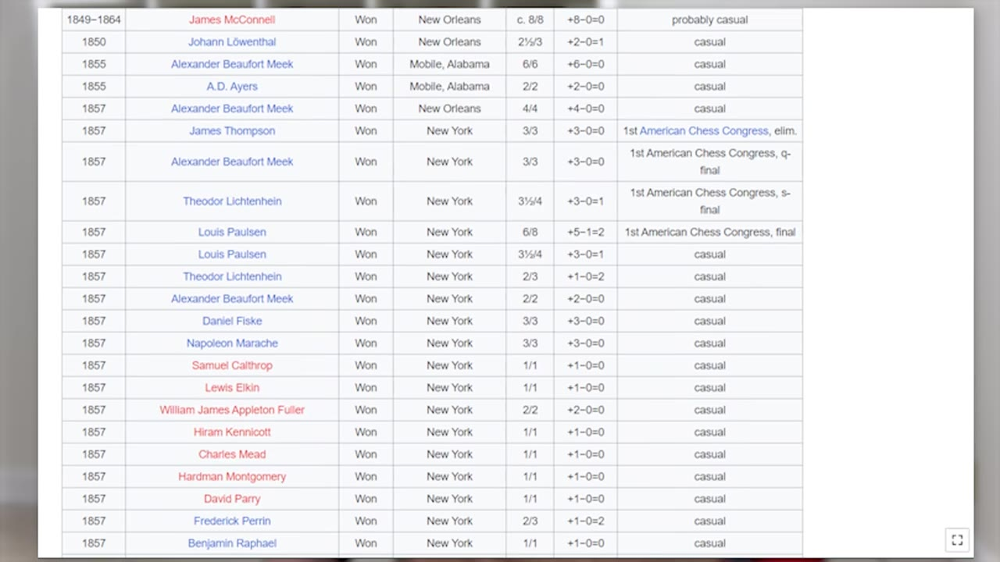
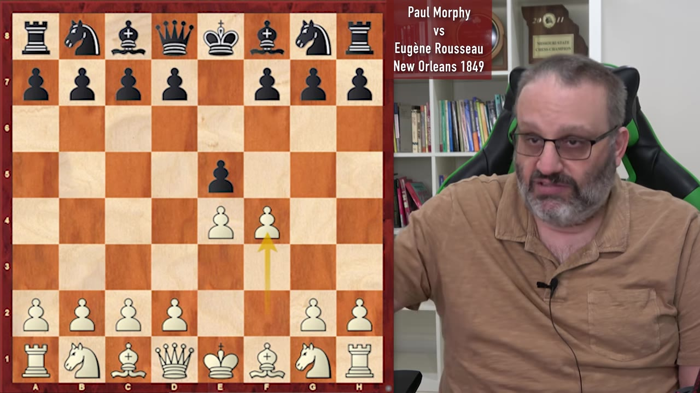
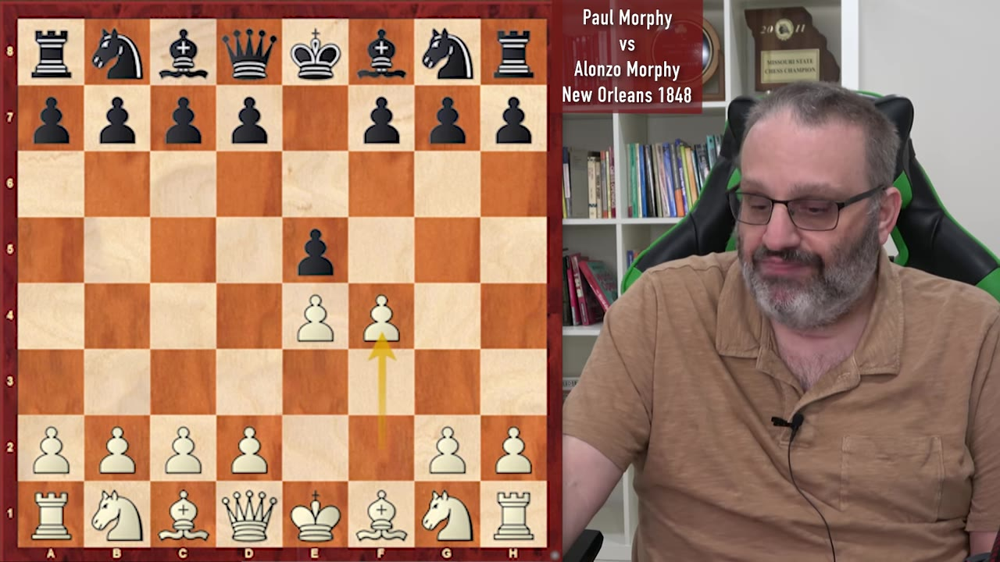
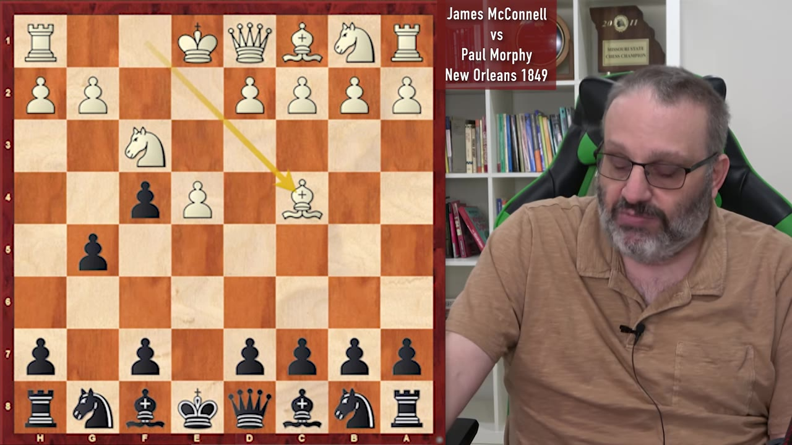
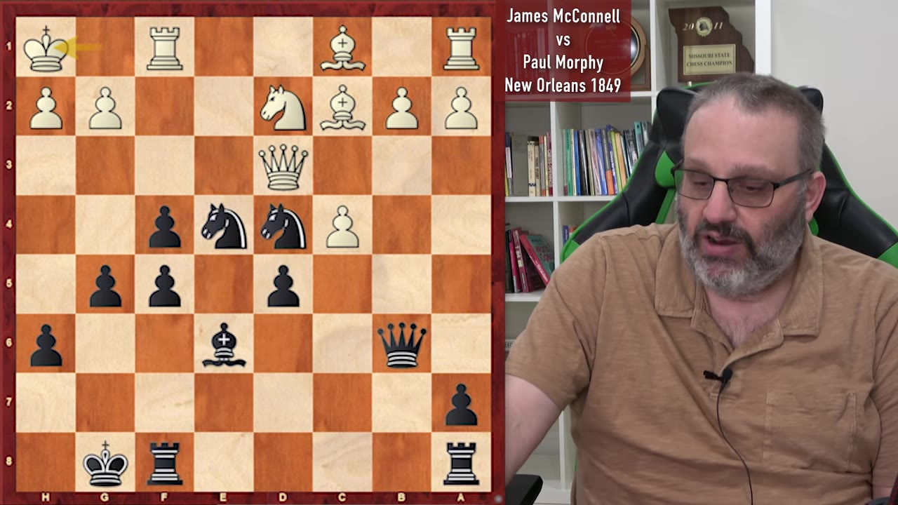
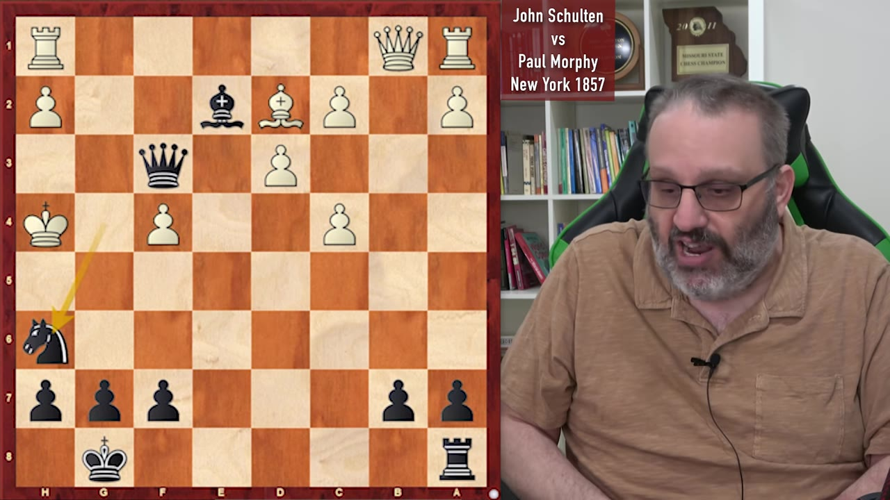

In the first of a four-part series, Grand Master Ben Finegold argues that Paul Morphy isn't just the greatest player of his era — he's in a league of his own, even by today's standards.
Watch on YouTubeThe case for Paul Morphy isn't made with engines — it's made by comparing him to the players who actually lived in his era. And on that measure, Finegold argues, Morphy doesn't just lead his century; he transcends it.

The top players of all time are usually Fischer, Kasparov, or Carlsen. But none of them destroyed their contemporaries the way Morphy did. Finegold's analogy: imagine a world where everyone is rated 1200 and someone is 1350 — that gap would make Morphy look like a 2200 in that world.
When you judge players' strengths, the best way is to compare them to their contemporaries. Morphy was so good that it doesn't even make any sense.— GM Ben Finegold
The first game shows Morphy playing White in the King's Gambit. Black accepts the pawn sacrifice with 2...exf4 — what Fischer called "the way to refute the gambit." But Morphy takes it further.

After 2. e4 e5 3. f4 exf4 4. Nf3 g5 5. h4 gxh4 6. Nxg5, Morphy plays the aggressive Knight to g5 — intentionally trapping it. He knows he's sacrificing a piece. After 6...h6 7. Qxg4, White has compensation for the knight and Morphy's attack begins.
The theme of the game: Morphy didn't just use the pieces he had — he brought in reinforcements. Every piece enters the attack, and the opponent's king gets trapped with no defenders. The finish: Queen C7 checkmate.
Morphy attacked with all of his pieces. His opponent only had a king and a queen out for most of the game moving his king and his queen.— GM Ben Finegold
In a game played when Morphy was young but already strong, he takes White against his own father, Alonso Morphy — no let-up.

Black's queen wanders early (Qh4+) and gets chased around with tempo by Nf3. Morphy develops every piece while his father makes one-move threats that White easily parries. By move 10, Morphy's position is completely winning — his queen ends up back on d8 where it started.
Morphy's dad did better than the previous opponent because he actually got some of his pieces out and castled. That's pretty good.— GM Ben Finegold
Alonso resigned rather than face Rook E8 check or loss of the queen — or what Finegold calls "double checkmate."
Now Morphy plays Black against James McConnell. He accepts the King's Gambit pawn, then plays like it's an Evans Gambit in reverse — attacking the bishop to gain time, building a big center with c6 and d5.

McConnell's position is passive and cramped. White's queen makes multiple moves only to end up on c2. Morphy's pawn chain on the queen-side thwarts White's bishop. The attack begins to build.
Then comes the famous finish — the smothered mate:

Knight H3 is double check. The king must move. Queen G1+ — you can't take the queen because the knight defends it. The king is smothered by its own pieces. Knight F2 checkmate.
The final game: Morphy plays the Falkbeer Counter-Gambit — declining White's gambit by sacrificing his own pawn on move two. By move six, Morphy is two pawns down but has seized the initiative, opened the e-file, and developed all his pieces.

White's king wanders (Kf1, Kf2) instead of castling. Morphy punishes with one of Finegold's favorite rules: "always sacrifice the exchange." The Knight to d4 can't be defended, and after a forced sequence of checks, the position reaches mate-in-two.
Knight F5+ forces the king to g5. Queen H5 — mate. White never moved a single rook the entire game.
Morpheus seemed to find the fine line between playing super aggressive and somehow accurate. So very much like an engine.— GM Ben Finegold
Morphy's games feel modern not because they were studied — they weren't. In the 1850s there were no chess books you could really buy, no internet, no tournaments to get better at chess. He calculated and played like a modern player through sheer talent.
We stand on the shoulders of giants and we learn from this. His game made a lot of sense even to us now, whereas his opponents' some of their moves didn't make a lot of sense to us.— GM Ben Finegold